酷儿论坛2018秋季志愿者纳新全面启动
杭州酷儿论坛致力于为杭州及周边地区学生性少数人群提供一个多元、健康、平等的环境，促进自我认同和社会认可。
酷儿论坛的工作组都由志愿者构成，工作组下设 2 个支持性部门——行政组、媒体组，5个长期项目组——翻译组、三会组、检测组、心理组、桌游组，此外，全体酷儿论坛志愿者都是短期项目组，即活动部的成员。
每个小组的工作各有侧重，但缺一不可。只要你愿意在推动学生LGBT平权事业上与我们一路同行，就是我们所期待的小伙伴！
想和我们一起愉快地玩耍？看看哪个小组才是你的真爱吧！

· 行政组 ·
主 要 职 责
行政組的日常就是为各部门的工作提供支持，例如协调会议时间，掌管论坛财政大权，制定酷儿论坛各项规章制度，对各项目进行监测评估，撰写年度发展报告（点击下方蓝字可查看酷儿论坛2018上半年发展简报），进行志愿者管理及考核。
目前，行政组亟需一名人力资源专员，负责建立志愿者档案的工作。
为 什 么 你 一 定 要 加 入 行 政 组 ！
行政组的组长通常由酷儿论坛的站长担任，行政组的成员就成为了最接近站长的人！而酷儿论坛的现任站长是刚刚在巴黎世界同志运动会上摘金夺银的乒乓球选手阿园！
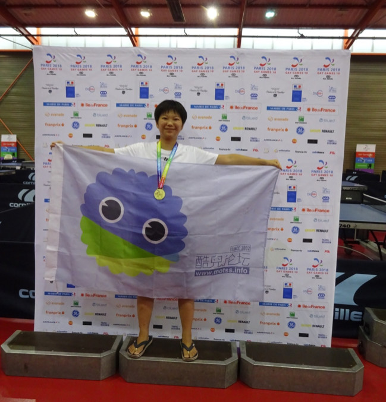
性*感酷儿女站长在线招揽行政组小伙伴
想要成为站长最为信赖的酷儿论坛志愿者吗？那就加入行政组吧！
行政组虽然自身没有什么很大的活动产出，但我们是酷儿论坛最坚实的后盾，与论坛同进退。行政组是和各组打交道最多的部门，很锻炼你为人处事的能力，让你有最充足的机会多多了解团队中的每个人，发现大家的可爱之处

· 媒体组 ·
主 要 职 责
媒体组负责宣传平台运营，主要是论坛日常维护工作、微博/微信/QQ宣传平台的内容更新与日常维护，品牌推广和社群运营。
微信有论坛的吉祥物AI苦瓜君瓜瓜的后台运营，微信公众号的后台运营（编辑排版、回复留言等工作），推送原创内容的产出，原创内容可以是性/别方面相关的任何东西。文艺一点说，我们的工作就是记录论坛小伙伴们一起生活的点点滴滴。
微博主要同步微信的推送，同时可以转发一些别的组织的内容。同时微博君也可以远程工作，所以非常欢迎其他地区的小伙伴加入管理。
在 媒 体 组 ， 你 收 获 了 什 么 ？
文文：在媒体组工作了一年，从一开始的翻译到后来写一些推荐、科普文章，最大的收获是性/别的基础知识，对很多事能够以性/别的视角去看待，在写文章的过程中也对零散的知识进行了很好的整理。最重要的一点是，你做的这些事情你看得到改变，至少会有一个记录，感觉很有收获，自己的付出得到了肯定那种满足感。
还有的收获就是专业技能的提升啦，加入媒体组之前真的是一个完全小白，现在微信推文的排版编辑都轻松掌握啦，也能进行一些简单的文章的书写。而且你也可以把自己平时很难找到同好的东西发出来（嗯我就是这么做的虽然很少有人看qvq）
艹姐姐：“亲爱的文案你写了吗？” “插图你做了吗？”“版你排了吗？”“要过12点了！你怎么还没推？”“浪蛙你在哪？（手动微笑）”……在这里不仅能接触各种科普和羞羞的活动资讯，还可以提早适应新媒体大坑，为以后实习／工作的加班生活做好充分的身理／心理准备。
我 们 期 待 这 样 的 你
具备一定的相关专业技能，如摄影、PS、视频剪辑制作等（这里的加粗看到了吗！！有技能的朋友不要犹豫了赶紧来报名！）
如果你有线上平台的运营经验会很加分，当然你有原创内容的产出能力也十分欢迎！

· 翻译部 ·
主 要 职 责
翻译部门成立于2018年上半年，包括但不限于翻译整理性别、性少数议题的论文、新闻、图书。
过去的半年间我们发布了“首个学生性少数组织的发展轨迹”、“威权国家的同志运动”、“莫斯科的酷儿空间与荣辱”三篇学术文章的译文，前后翻译字数高达五六七八万字！
我们长达七个月的历史可以概括如下：
酷儿论坛的学术门面，河蟹的重灾地。
忙时忙到掉头发，闲时闲到数头发。
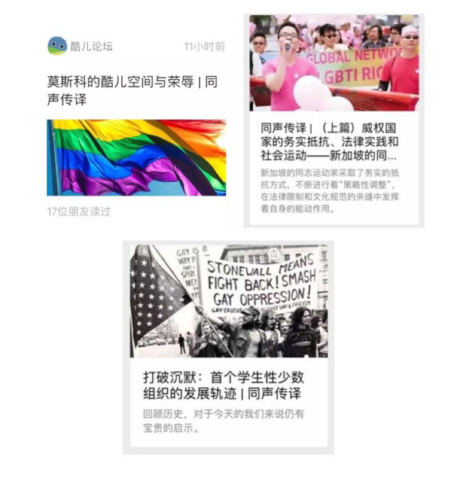
在同志社群内部坚持尊重性别多元与性别平等 ——中国同志机构联合声明联署信
发 展 计 划
我们希望能在接下来的时间开展更多样的翻译形式，如视频、漫画等形式，不局限于单纯的文字转换；
打造经典的翻译作品，比如说“酷儿文学/漫画”的连载翻译，如果有机会，也可以尝试出版，为泥潭（注：酷儿论坛的好朋友们对论坛的爱称）续命；
涉猎更广阔的文化领域，为泥潭的国际化发展增砖添瓦。
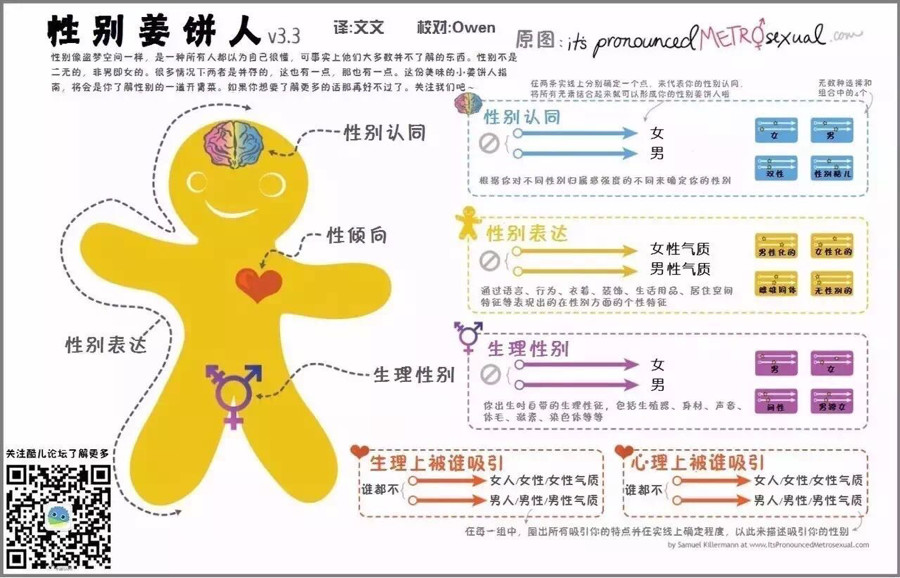
We need you, if…
你有良好的双语、多语能力，文字功底优秀，能够从事翻译工作；
你有敏感的文化嗅觉，搜寻国内外最新的性别研究、新闻、社评；
你有不错的学术素养，愿意针对某一问题展开深入探讨；
无论你是杭州土著还是异国学子，只要对翻译部充满热情，你都是我们最需要的人。
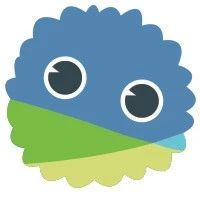
· 检测组 ·
主 要 职 责
每年的世界艾滋病日都会策划相关的活动。
于2016年12月举办了吴么西杭州专场讲座，在杭州的三所高校分享性教育的理念。
于2017年12月举办了谭国甸杭州专场讲座，在杭州的两所高校分享性教育的理念。并拍摄防艾相关的趣味视频。与西湖疾控中心合作，为学生群体提供艾滋唾液检测，为社区提供服务。
加 入 检 测 项 目 组 ， 你 能 收 获
对艾滋病等疾病最新资讯、研究成果的了解
对社群中艾滋病感染者与携带者的关怀与帮助
为消除恐艾情绪进而实现内部平权而努力的成就感
为学生群体中艾滋检测与防治工作的贡献
我 们 需 要 这 样 的 你
对性教育、防艾等议题感兴趣
有较强的责任意识和关怀精神

· 三会组 ·
三 会 简 介
“三会”指的就是读书会、观影会和分享会这三个会啦！让三会组负责人丸妹为您一一介绍。
读书会是论坛自上学期开始筹办的项目，通过邀请大家一起来阅读与LGBT和性别相关的书籍，一起探讨歧视、多元性别、情欲等与我们的社群生活息息相关的议题，迄今已经成功举办三期啦。
未来，我们还计划了邀请相关的学者为我们导读（因此欢迎热爱学术的你加入本组嘤）、剧本朗读（有好的剧本推荐的一定要加入我们鸭）等许多全新策划，就等你帮我们一起实现楽。
观影会是论坛的老牌活动，集体看♂片的体验值得泳有，而且看的片都让本丸记忆犹新。（比如《摇滚芭比》的那首Angry Inch已经成为我的刷夜循环曲目惹）
分享会是我们正在筹备中打算的一个项目，充分利用1500万酷儿论坛会员的优势，邀请大家带来Ta们各自的有趣经历，分享给大家听嘤。（第一个要办的就是世界冠军阿园的巴黎世同会分享啦，请大噶脐带）
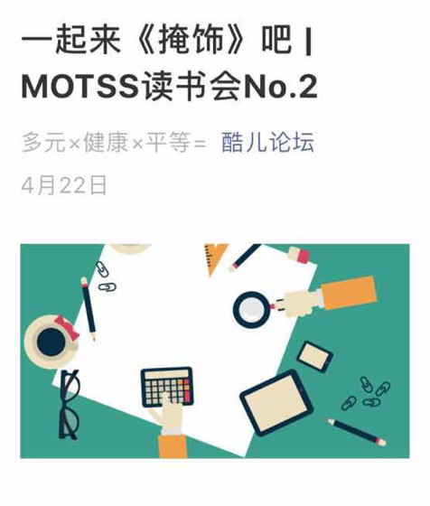
我 们 希 望 你
有办活动的热情和执行力！！（这其实是唯一重要的条件啦）
（当然，如果你具备以下特质，一跃成为三会组项目负责人也指日可待）
博览群书，或有博览群书的兴趣，但凡是有关性与性别的书籍你都恨不得熬夜读完
认识很多性少数人士，一周招揽一个人来分享完全不在话下
阅片无数，尤其是对女权&性少数相关电影如数家珍
当然如果你不符合以上三条中的任何一条也没关系，只要有为潭鞠躬尽瘁（不是）的决心，本组都十分欢迎你！啾咪。

· 心理组 ·
主 要 职 责
联系校内外友善心理咨询师，建立杭州及周边地区友善咨询师网络，为寻求咨询服务的小伙伴提供更友善的咨询环境。
邀请心理咨询师或相关心理健康从业者不定期举办沙龙和讲座，策划多元多彩的沙龙／讲座主题。
定期举办心理健康相关的谈话沙龙，为社群成员提供安全开放的心灵沟通环境。
如 果 你
对心理咨询有兴趣，或已具备一定的心理学知识
尊重多元，包容差异，乐于倾听
愿意用自己的闲暇时间为性少数人群心理健康提供服务与帮助
那么，欢迎你加入心理组！

· 桌游组 ·
主 要 职 责
论坛每个周六都会举办冒刺桌游会，旨在为朋友们提供一个娱乐和交流的机会，迄今为止已经举办了120多次啦，是一个一直在活跃的项目呢，像冒刺桌游会这样的周常活动也是酷儿论坛重要的收入来源之一，也是很多小伙伴周末休闲活动的一个重要选择，加入桌游组，你将能够亲自参与组织桌游会活动，认识更多可爱的小伙伴，见识到许多许多的桌游，与大家一起共度难忘的时光。
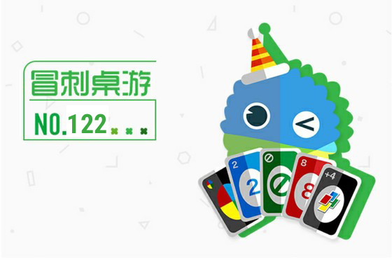
我 们 欢 迎 这 样 的 你
有一定的组织活动能力或经验，愿意参与、有时间参与周常活动的组织工作。对桌游有些了解（组织桌游活动）、乐于在多人场合活动、或者愿意认识新朋友、喜欢与人打交道等等，都欢迎来到桌游组发挥自己的优势。

· 活动部 ·
主 要 职 责
活动部是酷儿论坛于18年9月改组后成立的新部门，其前身是倡导组。加入酷儿论坛，你就自动成为了活动部的一员。
倡导活动是酷儿论坛的核心项目，志愿者们通过举办讲座、涂鸦等各类活动向公众发声；从教科书项目、教师游说项目入手推进友好校园环境建设，倡导多元性别和平等理念，营造更为平等、多元、开放、包容的校园文化乃至社会环境。培育有志青年参与同志公益活动。
此外，开学趴、新年趴等临时的大型活动也都由活动部来筹备。
所有活动都对每名志愿者开放，你可以根据自己的兴趣选择各种活动来参加或者加入它的策划小组，也可以自由地发起新活动哦~
我们的活动丰富多彩👇
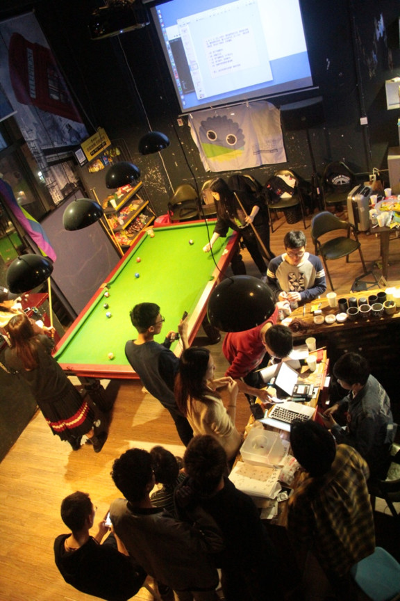
开学派对
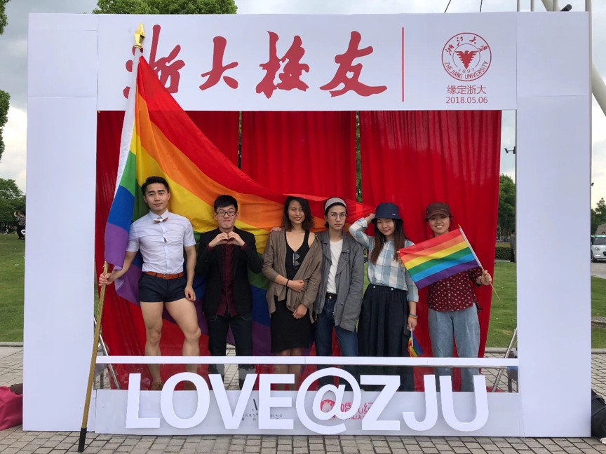
集体婚礼现场倡导
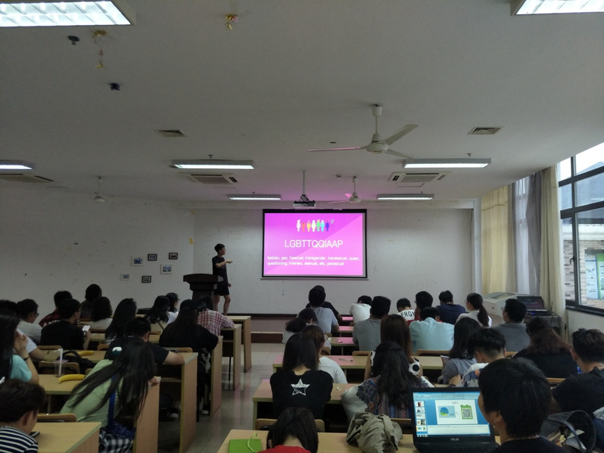
走进校内举办多元性别工作坊
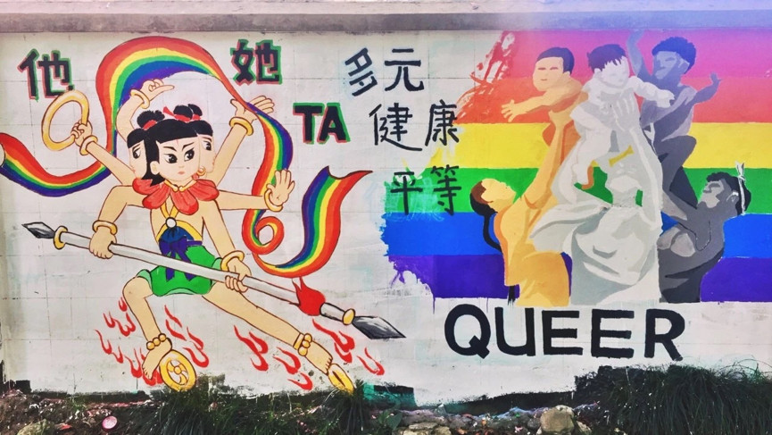
骄傲月的“酷儿小哪吒”和“亚非拉妇女多元成家”涂鸦
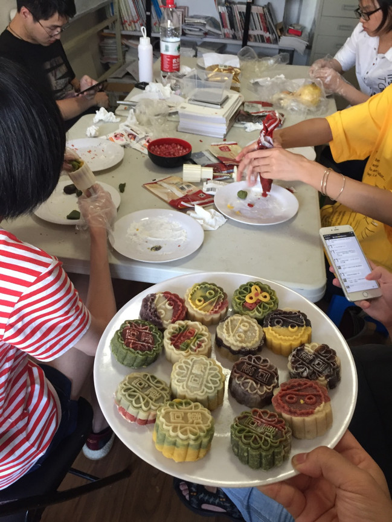
中秋节小伙伴一起制作可爱月饼
对 志 愿 者 的 要 求
（也就是对所有想要加入酷儿论坛的小伙伴的期待）
对性少数群体友好，有一颗多元和包容的心（当然我们也欢迎友同直人~）；
有基本的性/别意识，或者愿意接触学习多元性别理论；
对同志公益有热心，有平等权益的意识，认同我们的愿景；
有较强的责任心和行动力，并且愿意花一定时间的；
最好有一定的活动策划能力；
不怕出柜的（如果你想要参加线下倡导活动的话~）；
主要居住在杭州；
并且真的想为杭州高校同志群体做一些事情。
志 愿 者 将 收 获 的
接触并认识一大堆同志公益圈的圈内人，获得一段美好的回忆；
参与同志公益，培养自己的多元性别意识，为性少数群体服务、发声；
获得宝贵的志愿者培训机会，了解民间NGO的工作方式；
提高工作能力，积累不同的工作经验，提升个人素养；
最重要的是你将获得行动中的快感！
报 名 方 式
志愿者报名已经正式启动啦！点击“阅读原文”填写报名表，选择你喜欢的部门吧！
注意，活动部必选，其他小组可以根据自己的兴趣选择0-2个哦。
报名截止时间是2018年10月10日24:00，不要错过哦~
面试会在报名截止的这一周周末进行，具体安排会在报名截止后通知大家
如果你对酷儿论坛志愿者的工作有什么疑问，可以加入我们的招新咨询群（下方二维码），热情友善的志愿者们随时乐意为你解答~